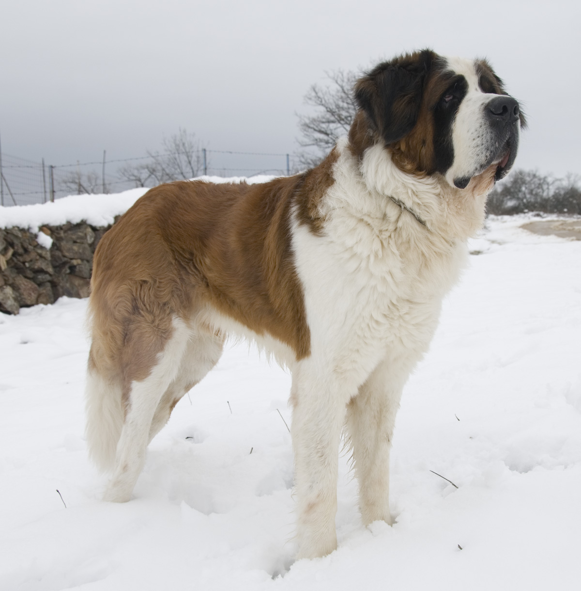
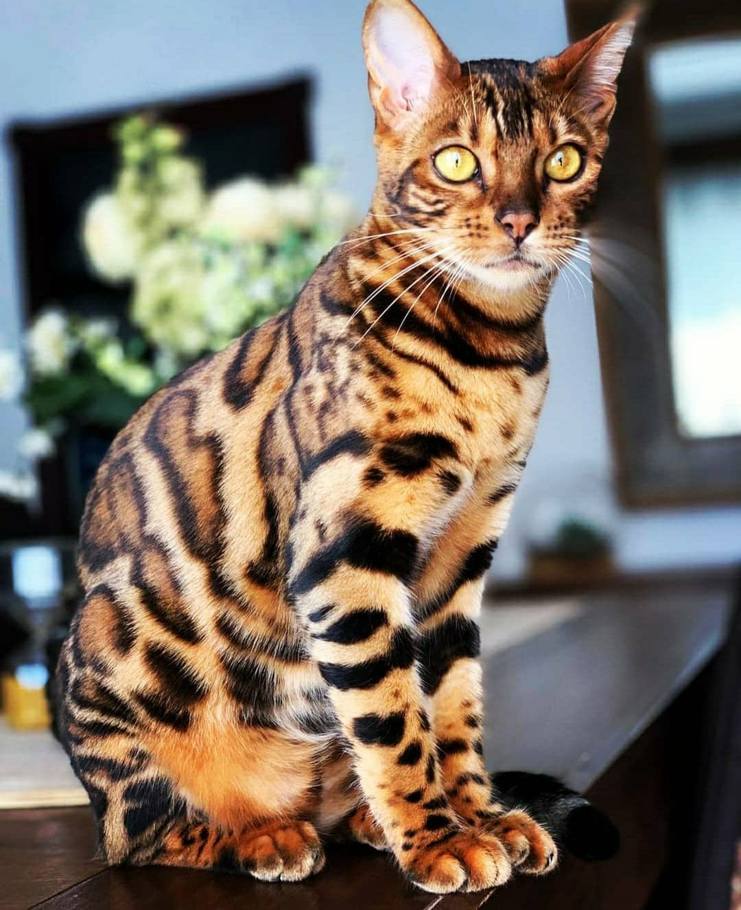

No tengo animal favorito porque me gustan todos los animales realmente, pero estos son con los que he vivido toda la vida.

Este perro es una raza llamada "San bernardo" y es uno de los perros más grandes que hay.

Este gato es una raza poco común llamada "Bengalí" o "de Bengala". Es característico por tener un estampado de leopardo.